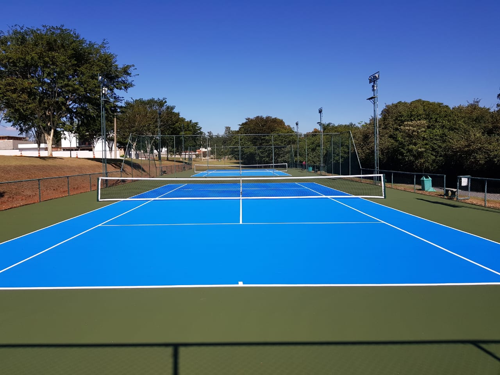

A escolha do tipo de piso para quadra de tênis impacta diretamente no estilo de jogo, na velocidade da bola e nas exigências físicas dos atletas. Cada superfície tem características únicas que favorecem diferentes perfis de jogadores.

1. Saibro (Terra Batida / Clay)
O saibro é a superfície mais tradicional do tênis no Brasil e na Europa. É composto por terra avermelhada ou cinza finamente moída.
- Velocidade da bola: Lenta — ideal para jogo de fundo
- Quique: Alto e previsível
- Impacto nas articulações: Baixo — superfície amortecida
- Manutenção: Alta — molhar, varrer e nivelar diariamente
- Custo de instalação: R$ 80 a R$ 150/m²
- Torneios famosos: Roland Garros (Paris)
Ideal para: Jogadores baselineros, clubes com equipe de manutenção, regiões de clima seco.
2. Piso Rápido (Hard Court)
O piso rápido é a superfície sintética mais usada no mundo atualmente. Geralmente é uma base de concreto ou asfalto com pintura de acrilato.
- Velocidade da bola: Média a rápida
- Quique: Regular e consistente
- Impacto nas articulações: Médio a alto
- Manutenção: Baixa — limpeza e repintura periódica
- Custo de instalação: R$ 120 a R$ 200/m²
- Torneios famosos: US Open e Australian Open
Ideal para: Uso intensivo, clubes e academias, jogadores all-court.
3. Grama Natural
A grama natural é a superfície mais rápida e exigente, tanto em jogo quanto em manutenção.
- Velocidade da bola: Muito rápida — favorece serve and volley
- Quique: Baixo e imprevisível
- Impacto nas articulações: Baixo
- Manutenção: Muito alta — corte, rega e fertilização constantes
- Custo de instalação: R$ 150 a R$ 250/m²
- Torneios famosos: Wimbledon (Londres)
Ideal para: Clubes de alto padrão com equipe de jardinagem dedicada.
4. Grama Sintética
A grama sintética para tênis oferece o visual da grama natural com muito menos manutenção.
- Velocidade da bola: Média — depende do tipo de fibra
- Quique: Regular
- Impacto nas articulações: Baixo a médio
- Manutenção: Baixa — escovação e limpeza periódica
- Custo de instalação: R$ 150 a R$ 280/m²
- Durabilidade: 8 a 12 anos
Ideal para: Clubes que querem estética de grama sem os custos de manutenção.
Comparativo das Superfícies de Tênis
Construa Sua Quadra de Tênis
Especialistas em todas as superfícies de tênis. Solicite seu orçamento personalizado.
Falar no WhatsApp